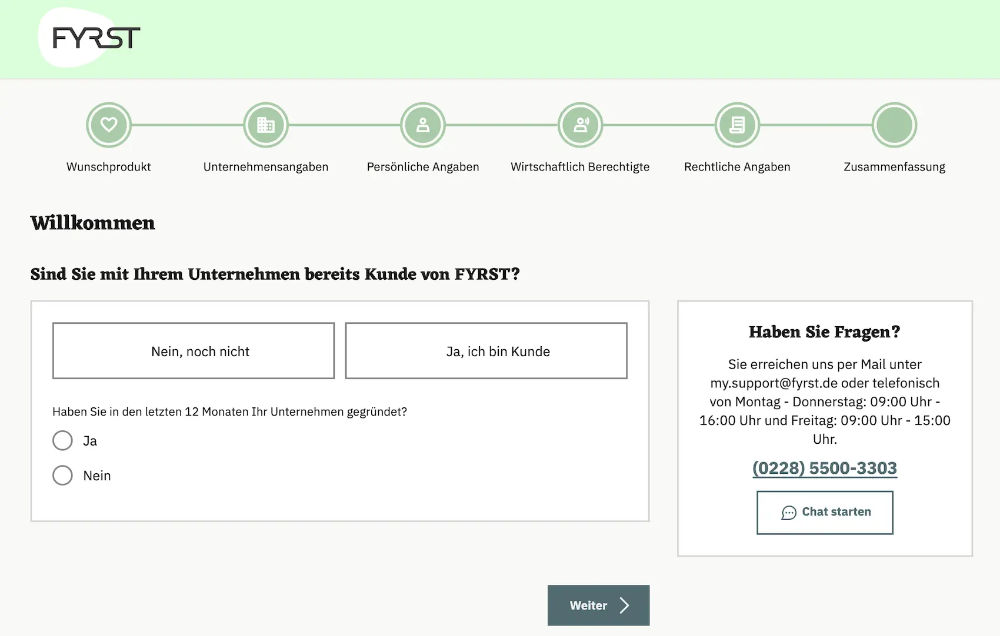

Das Wichtigste: FYRST Geschäftskonto
- BASE ab 0 €: für natürliche Personen dauerhaft kostenlos; für juristische Personen nach 6 Gratis-Monaten 6 € pro Monat.
- Tarife: BASE ab 0 €, COMPLETE für 10 € und PREMIUM für 24 € pro Monat.
- Deutsche-Bank-Umfeld: digitale Marke der Deutschen Bank AG mit Bargeld- und Kartenservices.
- Einlagensicherung: gesetzlich bis 100.000 € pro Einleger; weitere Sicherungssysteme je nach Bankkontext.
- Bargeld und DATEV: Bargeld-Code-Einzahlungen kosten 1,5 %, Abhebungen im Cash-Group-/Postbank-Netz 0 €; MT940 in PREMIUM kostenlos.
- Gründerkonto: FYRST COMPLETE im ersten Jahr ohne Grundpreis, sevdesk und DATEV-Schnittstelle inklusive.
Für wen ist FYRST geeignet — und für wen nicht?
Am besten passt FYRST zu Selbstständigen und Gründern sowie kleineren Unternehmen mit Wunsch nach klassischer Bankeninfrastruktur. Besonders interessant ist FYRST, wenn Bargeldthemen, deutsche Bankanbindung oder ein separates Gründerangebot wichtig sind.
- Freelancer & Solo-Selbstständige — BASE ist für natürliche Personen ohne monatlichen Grundpreis verfügbar
- Gründer — Gründerkonto mit 12 Monaten ohne Grundpreis
- Unternehmen mit Bargeldbedarf — Bargeldabhebungen und Einzahlungen sind vorgesehen
- Unternehmen mit klassischer Bankpräferenz — Deutsche-Bank-/Postbank-Umfeld statt reinem Fintech-Setup
- Rein internationale Setups — für Multi-Währung und Ausland gibt es modernere Spezialanbieter
- Sehr schnelles Neobank-Onboarding — Prüfung und Kartenversand können länger dauern
- Moderne Spend-Management-Workflows — virtuelle Karten und Teamsteuerung sind nicht der Kernfokus
- App-first-Teams — das Produkt wirkt klassischer als viele Fintech-Alternativen
FYRST Geschäftskonto: Rechtsformen
Im offiziellen FYRST-FAQ werden aktuell zahlreiche deutsche Rechtsformen ausdrücklich genannt. Zusätzlich bewirbt FYRST eigene Lösungen für Selbstständige, Freiberufler, Einzelunternehmer sowie für Kleinunternehmer und Kleingewerbe.
| Rechtsformen | Status | Unterlagen / Hinweis |
|---|---|---|
| Gewerbetreibende, Freiberufler, Einzelunternehmer, Kleinunternehmer, Kleingewerbe | Möglich |
|
| e.K., UG, GmbH, GbR, GmbH & Co. KG, UG & Co. KG, OHG, KG | Möglich |
|
| e.V., e.G., Partnergesellschaft, Gesellschaft in Gründung (i.G.) | Möglich |
|
FYRST Geschäftskonto: Kosten & Konditionen
Die folgende Tabelle fasst die aktuellen Kernkonditionen der FYRST-Geschäftskonten zusammen. Abgeglichen wurden die offiziellen FYRST-Produktseiten und die sichtbaren Tarifinformationen, Stand 29. Mai 2026.
| Leistung | BASE | COMPLETE | PREMIUM |
|---|---|---|---|
| Grundgebühr mtl. | 0 € für natürliche Personen; für juristische Personen 6 Monate gratis, danach 6 € |
10 € | 24 € |
| Freiposten (beleglos) | 50 / Monat | 75 / Monat | Premium-Staffelpreis 0,04 € pro Buchungsposten |
| Weitere beleglose Buchungen | 0,19 € / Buchung | 0,08 € / Buchung | 0,04 € / Buchung |
| Unterkonten | Nicht inklusive | 1x inklusive FYRST BASE als Unterkonto |
5x inklusive Unterkonten auf BASE-Basis |
| Karten | Debit Mastercard + Girocard | Debit Mastercard + Girocard | Debit Mastercard + Girocard |
| Bargeld | Postbank, Cash Group, Bargeld-Code | Postbank, Cash Group, Bargeld-Code | Postbank, Cash Group, Bargeld-Code |
| DATEV / Buchhaltung | MT940: 5,00 € / Monat | MT940: 5,00 € / Monat | MT940: 0,00 € / Monat |
| Rechtsformen | Viele gängige deutsche Rechtsformen | Viele gängige deutsche Rechtsformen | Vor allem juristische Personen |
| Zusatzangebote | Gründerkonto und Tagesgeld Optional |
Gründerkonto und Tagesgeld Optional |
Tagesgeld und Premium-Bausteine Optional |
| Konto eröffnen | BASE → | COMPLETE → | PREMIUM → |
FYRST Geschäftskonto: Vor- und Nachteile
- Günstiger Einstieg mit FYRST BASE für natürliche Personen
- Deutsche-Bank-/Postbank-Umfeld statt reiner Fintech-Struktur
- Bargeldservices stärker ausgebaut als bei vielen Neobanken
- DATEV-Anbindung klar auf Geschäftsnutzer ausgerichtet
- Viele deutsche Rechtsformen werden adressiert
- Klassischeres Onboarding als bei vielen Fintechs
- Weniger modern als Qonto oder Finom
- Internationales Banking ist nicht der Hauptfokus
- Mehrere Leistungen tarifabhängig oder kostenpflichtig
- Für moderne Team-Workflows gibt es stärkere Spezialisten
Funktionen & Features im Detail
FYRST deckt die wesentlichen Zahlungsverkehrsfunktionen für den Geschäftsalltag ab. Die wichtigsten Bereiche im Detail:
Online-Banking & App
Online-Banking für Desktop und Smartphone gehört bei FYRST zum Standard. Legitimation und Freischaltung können sich je nach Rechtsform und Antragsweg unterscheiden.
Zahlungsverkehr
SEPA-Überweisungen, Lastschrifteinzug, Daueraufträge und Instant Payments gehören bei FYRST zum Standard. Auslandsüberweisungen in fast allen gängigen Fremdwährungen sind möglich, aber kostenpflichtig. FYRST eignet sich damit vor allem für nationale oder SEPA-Zahlungen.
Unterkonten & Multi-User
Unterkonten und Multi-User sind bei FYRST tarifabhängig. In FYRST COMPLETE ist FYRST BASE als Unterkonto möglich, in FYRST PREMIUM sind bis zu fünf Unterkonten auf BASE-Basis inklusive. Unterschiedliche Berechtigungsstufen sind möglich.
Rechnungsstellung & Buchhaltungstools
DATEV und der beleglose Datenaustausch per MT940 gehören bei FYRST sichtbar zum Angebot. MT940 kostet in FYRST BASE und FYRST COMPLETE 5,00 € pro Monat und ist in FYRST PREMIUM kostenlos. Im Gründerkonto ist die DATEV-Schnittstelle im ersten Jahr kostenlos, danach 5,00 € pro Monat.
FYRST Geschäftskonto: Karten
FYRST bietet eine kostenfreie Debit Mastercard mit Kreditkartenfunktionen sowie eine kostenfreie Girocard. Die erste FYRST Card ist kostenlos; ab der zweiten Karte fallen je nach Tarif jährliche Entgelte an.
| Karte | Typ | Kosten | Besonderheiten |
|---|---|---|---|
| FYRST Card | Girocard ehem. EC-Karte |
0 € / Jahr | klassische Inlandskarte im FYRST-/Postbank-Umfeld |
| FYRST Card Plus | Debit Mastercard | 0 € / Jahr | Weltweit, Apple Pay & Google Pay |
| Postbank MC Business Classic |
Kreditkarte Optional |
Nicht ausgewiesen | optionale Kreditkartenlösung für mehr Liquidität |
| Postbank MC Business Gold |
Kreditkarte Premium Optional |
Kostenpflichtig Rabattiert im 1. Jahr |
Reiseversicherungen, Premium-Benefits |
FYRST Geschäftskonto: Bargeld & Abhebungen
FYRST bleibt beim Thema Bargeld klassischer als viele Digitalanbieter. Abhebungen laufen über Postbank und Cash Group, Einzahlungen sind per Beleg oder Bargeld-Code möglich.
| Leistung | FYRST BASE | FYRST COMPLETE | FYRST PREMIUM |
|---|---|---|---|
| Bargeldabhebung | 0,00 € an Postbank & Cash Group |
0,00 € an Postbank & Cash Group |
0,00 € an Postbank & Cash Group |
| Bargeld-Code-Auszahlung | 0,00 € | 0,00 € | 0,00 € |
| Bargeldeinzahlung per Beleg | 3,00 € | 2,50 € | 2,50 € |
| Bargeld-Code-Einzahlung | 1,5 % | 1,5 % | 1,5 % |
| Einordnung | guter Einstieg mit Bargeldzugang | stärker für regelmäßige Nutzung | brauchbar mit mehr Reserve |
Buchhaltung, DATEV & Softwareintegrationen
DATEV- und Steuerberateranbindung gehören bei FYRST zu den wichtigeren Buchhaltungsthemen. Höhere Tarife und Spezialangebote bauen diesen Bereich sichtbar aus.
Folgende Buchhaltungslösungen sind direkt anbindbar oder werden mit Rabatten angeboten:
- DATEV / MT940: 5,00 € in BASE und COMPLETE, 0,00 € in PREMIUM.
- sevDesk: Partneranbindung / Zusatzangebot.
- Lexware Office (lexoffice): Direkte Bankanbindung.
- Sage: Partneranbindung / Zusatzangebot.
Einlagenschutz & Regulierung bei FYRST
FYRST ist eine digitale Geschäftskonto-Marke im Umfeld der Deutschen Bank AG. Dadurch ist das Produkt regulatorisch näher an einer klassischen Banklösung als viele reine Fintech-Modelle; Kundenguthaben sind bis 100.000 € gesetzlich abgesichert.
| Status | Geschäftskonto-Marke im Deutsche-Bank-Umfeld |
| Bankanbindung | Im Umfeld der Deutschen Bank AG / Postbank |
| Gesetzliche Einlagensicherung | Bis 100.000 € pro Einleger |
| Wichtiger Hinweis | Die genaue Zusatzsicherungslogik sollte im konkreten Produktumfeld jeweils aktuell abgeglichen werden |
Wie eröffne ich ein FYRST Geschäftskonto?
Die Kontoeröffnung kann digital gestartet werden. Tempo und Ablauf hängen von Rechtsform, Legitimation und den eingereichten Unterlagen ab.
- Tarif wählen: BASE, COMPLETE, PREMIUM oder gegebenenfalls das Gründerkonto passend zu Rechtsform und Bedarf auswählen.
- Online-Antrag ausfüllen: Unternehmensdaten, Rechtsform und benötigte Unterlagen in der Antragsstrecke ergänzen.
- Legitimation: Der konkrete Ident- und Prüfprozess richtet sich nach Antragsweg und Unternehmensform.
- Prüfung abwarten: Freischaltung und finale Kontobestätigung können bei komplexeren Rechtsformen zusätzliche Zeit benötigen.
- Karten und Zusatzprodukte: Nach der Kontoeröffnung werden die FYRST Card, die FYRST Card Plus und weitere Zusatzprodukte passend zum gewählten Modell bereitgestellt oder separat hinzugebucht.

FYRST Geschäftskonto Fazit 2026
Kurzfazit: stark bei Bargeld und klassischem Banking, schwächer bei modernen App- und Softwarefunktionen.
Besonders lohnt sich das FYRST Geschäftskonto 2026 für Einzelunternehmer, Freiberufler, GbRs und viele kleinere Kapitalgesellschaften, die ein vergleichsweise klassisches Geschäftskonto mit Deutsche-Bank- und Postbank-Nähe suchen. Wer Bargeld einzahlen möchte, eine Girocard schätzt oder eher traditionelle Bankprozesse bevorzugt, findet bei FYRST ein insgesamt stimmiges Gesamtpaket.
Weniger passend ist FYRST für Nutzer, die eine besonders moderne App-Erfahrung, tief integrierte Buchhaltungs-Workflows oder viele digitale Zusatzfunktionen aus einer Hand erwarten. Wenn der Fokus stärker auf Automatisierung, Softwareintegration und Fintech-Komfort liegt, wirken spezialisierte Alternativen häufig runder.
Nicht das Richtige? Diese Alternativen könnten passen
Alle drei Anbieter haben wir ebenfalls getestet — hier die wichtigsten Unterschiede auf einen Blick.

Sehr stark für Teams, Rollenlogik und moderne Software-Prozesse mit klar digitalem Fokus.
✓ moderner als klassische Bankmodelle
× weniger klassische Banknähe als FYRST

Naheliegend für Freelancer und Selbstständige mit Fokus auf Karten, Rechnungen und Cashback-Logik.
✓ digitaler Workflow als bei FYRST
× Preislogik etwas erklärungsbedürftiger

Besonders interessant für Selbstständige, die Steuer- und Buchhaltungslogik enger in einer App bündeln möchten.
✓ sehr klarer Solo-Fokus
× Bargeld und Filialnähe schwächer
Alle Konten im großen Vergleich: Geschäftskonto-Vergleich 2026 →